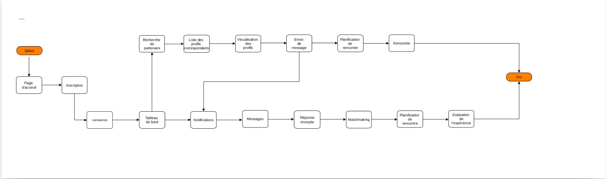

Rapport de Projet - Gestion des Emplois du Temps
GROUPE N°4
Les Membres du Groupe
1-MOUTOUAMA Thérance
2-BESSANH Shadrak
3-GANDJI Fritzelle
4-CODJO Merveille
5-DJIBRIL Akorédé Ayeman
6-ALIDOU Mirdaas Alfa-kaza
7-AHOHOUINDO Ursule
8-BIO BANGANA BAWA Rayane
9-AHOMADEGBE Prince Cyrus Romuald
10-AZONNADOU Donatien
Introduction
Le présent cahier de charge décrit les exigences pour la création d'un site de rencontre innovant et performant. Notre objectif est de fournir une plateforme sécurisée,conviale et riche en fonctionnalités capable de permettre aux utilisateurs de créer des profils,rechercher et mettre en favoris d'autres utilisateurs,communiquer afin de trouver le/la partenaire idéal(e).
Objectif du Projet
- Faciliter la rencontre entre utilisateurs.
- Assurer la sécurité et la confidentialité des données.
- Proposer une interface intuitive et attrayante.
- Fournir des outils de recherche avancés pour trouver des correspondances potentielles.
- Offrir des moyens de communication sécurisés entre les utilisateurs.
Public cible
Notre plateforme s'adressera à un public large,incluant des personnes de tous âges et de divers horizons. Elle proposera des options de filtrage pour permettre des recherches personnalisées selon les préferences de chacun.
Fonctionnalités
Fonctionnalités principales
- Inscription et authentification des utilisateurs.
- Création et gestion de profils.
- Recherche facile.
- Messagerie instantanée.
- Notifications en temps réel.
Fonctionnalités supplémentaires
- Options de confidentialité et de sécurité des données.
- Intégration avec les réseaux sociaux pour faciliter l'inscription.
Design
- Design responsive adapté aux mobiles.
- Utilisation de couleurs attrayantes et adéquates.
- Navigation intuitive et claire.
Palette de couleurs
- Couleurs principale: #e8d3dd (rose éclairci)
- Couleurs secondaires: #d4s2e9 (blue éclairci)
- Couleurs de fond: degradé (#e8d3dd, #d4s2e9)
- Texte:#000000
Technologies Utilisées
- Pour la framework Django a été utulisé.
- HTML5 et CSS3 le front-end.
- JavaScript pour les interactions dynamiques.
- MySQL la base de données.
Délais
Le projet a été terminé en 1 mois.
- Début:16 Mai 2024
- Fin:19 Juin 2024
- Délais de dépot:20 Juin 2024
- Présentation:21 Juin 2024 à 16h40min
Planning Prévisionnel
Le projet été divisé en plusieurs phases : conception, développement, tests, et déploiement.
Description de la conception
Front-end
Nous avons créer une maquette global du site grâce à Canva que vous pouvez consulter directement. L'accueil varie selon le fait que l'utilisateur soit inscrit ou pas. Pour l'inscription, nous avons un formulaire qui demande à l'utilisateur de renseigner les champs, Email, Nom, Prenoms, Mot de Passe. Une deuxième page s'affiche demandant à l'utilisateur de renseigner ses différents centres d'intérêts. L'accueil avant inscription est constituer d'une barre de navigation contenant des liens externes qui ramène tous vers la page de connexion obligant l'utilisateur a se connecter. En dessous une image illustrant l'amour enfin trouver à travers une photo mettant en valeur un couple s'embrassant au bord de la mer sous un beau coucher de soleil. Juste en dessous une petite description du Site. Mettant l'accent sur sa crédibilité et sa sécurité. On retrouve après différents profile de filles. Initiant donc les utilisateurs à savoir comment leurs profile seront présenter et comment ils verront egalement le profil d'autres utilisateur. A la suite on retrouve Quelques témoignages de personnes qui se sont rencontrer grâce à notre site. Le footer marquant la fin de la page présente des liens externes tels que la section à propos, les FAQs etc... L'accueil après inscription contient une barre de navigation contenant des icônes redirigeant respectivement vers l'accueil, la page de suggestion, la messagerie, et la deconnexion. L'accueil montre les profiles déjà inscrit sur le site, ainsi que le page de suggestion, concernant la messagerie, nous avons opter pour une page affichant une partie contact montrant les utilisateurs discutant avec l'utilisateur connecté et une autre le chat active.
Back-end
Une table est utulisée pour permettre aux utulisateurs de s'inscrire puis de s'authentifier . Les informations qu'on y trouve sont dans des colonnes : Nom Prenom Email Mot de passe Age Sexe Photo Centres d'interet Presentation . Les elements sont organisés de telle sorte a permettre la securisation du site et l'amelioration de l'experience utilisateurs . L'accent est souvent mis sur la differenciation des contenues affiches en fonction du genre de l'utlisateurWARNING
Le port pas defaut que l'on a pris par defaut pour MySQLest 3309 . Nous avions souvent eu ds problemes de cle longues lors des migrations . Pour resoudre ceci : ALTER DATABASE bd_gp4 CHARACTER SET = utf8 COLLATE= utf8_general_ci ;
Instructions à suivre pour le déploiement
Pour déployer et exécuter notre site de rencontre suivez ces étapes:
- Télécharger et installer Xampp Server, Django, mysqlclient
- Lancer XAMPP control pannel et mettez en marche MySQL et Apache
- Allez sur le navigateur et rechercher localhost/phpmyadmin
- Connectez-vous avec le nom d'utilisateur root et n'utilisez pas de mot de passe puis connectez-vous
- Cliquez sur le bouton, créer une nouvelle table de données et entrez comme nom: 'bd_gp4'
- Aller dans le projet, faites "cd PIPG4" dans un terminal puis faire python manage.py runserver
- Une address vous serez fournie. Allez sur cette address
- Vous pouvez désormais voir à quoi ressemble le projet
Manuel d'utilisation pour
les utilisateurs du site de rencontre"Venus"
Introduction
Le site de rencontres “Venus” est conçu pour aider les utilisateurs à trouver des correspondances compatibles et à établir des relations amoureuses. Ce manuel fournit des instructions détaillées pour naviguer sur le site et utiliser ses fonctionnalités facilement.
Contenu
1.Inscription et Connexion
- Pour créer un compte, cliquez sur “S’inscrire” depuis la page d’accueil.
- Remplissez le formulaire avec vos informations (nom, e-mail, mot de passe).
- Connectez-vous en utilisant vos identifiants.
Profil d'utilisateur
- Après connexion, accédez à votre profil en cliquant sur votre photo de profil.
- Ajoutez une photo et rédigez une brève description.
- Entrez vos informations personnelles
- Entrez vos préférences (âge, passe-temps, etc.).
3.Recherche
- Utilisez la barre de recherche pour trouver des profils interressants.
- Mettez en favoris les profil qui vous attirent pour filtrer vos résultats.
4.Messagerie
- Pour envoyer un message, cliquez sur le profil de l’utilisateur et sélectionnez “Envoyer un message”.
- Recevez des notifications lorsque vous avez de nouveaux messages.
5.Confidentialité et Sécurité
- Consultez notre politique de confidentialité pour comprendre comment vos données sont utilisées.
6.Assistance et Support
- Si vous avez des inquiétudes, consultez notre FAQ.
- Contactez notre équipe d’assistance via le formulaire de contact.
Conclusion
Merci d’utiliser “Venus” ! Nous espérons que vous trouverez de tout coeur l’amour et des relations significatives sur notre site. N’hésitez pas à nous faire part de vos commentaires pour améliorer notre service.
Diagramme de flux du site
Vous pouvez voir ici le diagramme de flux indiquant le processus du site:
Travail effectué par chaque membre
MOUTOUAMA Thérance
Page d'accueil; tous les liens externes que contient le footer.
Points à souligner
- Bonne intégration de la maquette.
- A contribué pour l'amélioration des pages d'inscriptions, de connexion, et d'accueil après connexion.
- Présent à tous les meeting organisés par le groupe.
- Coopération très active avec les membres du groupe.
BESSANH Shadrak
BACK END.
Points à souligner
- Etablissement des bases de données.
- Back end non fonctionnel, ce qui a nécessiter l'implication de tout les membres du groupe notamment CODJO Merveille qui grâce à ses contacts nous a aider fait fonctionner le Back-end
- Coopération active avec les membres du groupe.
- Présent à tous les meeting organisés par le groupe.
GANDJI Fritzelle
Page d'inscription(email,mot de passe:nom,prénom;etc);Cahier de charge(amélioration).
Points à souligner
- Une intégration plus ou moins bonne de la maquette.
- Son travail a nécessité des améliorations notamment en CSS.
- Présence à 6 meeting en présentiel sur 7 organisés par le groupe pour des raisons de santé.
- Coopération active avec les membres du groupe.
CODJO Merveille
Page d'inscription (Age, préferences, description); cahier de charge(amélioration).
Points à souligner
- Une intégration plus ou moins bonne de la maquette.
- Son travail a nécessité des améliorations.
- Présent à tous les meeting organisée par le groupe.
- Coopération active avec les membres du groupe.
- A trouvé de l'aide pour le groupe grâce à ses contacts.
DJIBRIL Akorédé Ayeman
Dashboard utilisateur.
Points à souligner
- Une intégration plus ou moins bonne de la maquette.
- Son travail a nécessité un peu d'amélioration notamment avec Quelques propriétés CSS.
- Présent à tous les meeting organisés par le groupe.
- Coopération active avec les membres du groupe.
ALIDOU Mirdaas Alfa-kaza
Page de suggestion.
Points à souligner
- Une intégration plus ou moins bonne de la maquette.
- Quelques défauts enrégistrer notamment: Le passage du second profil à l'autre qui ne fonctionne pas.
- Son travail a nécessité un peu d'amélioration.
- Présent à tous les meeting organisée par le groupe.
AHOHOUINDO Ursule
Page de connection; Cahier de charge(amélioration).
Points à souligner
- Une intégration plus ou moins bonne de la maquette.
- Amélioration de la page sur les propriétés CSS Utilisées.
- Présent à 4 meeting en présentiel sur 7 organisés par le groupe.
BIO BANGANA BAWA Rayane
Front end de la Messagerie.
Points à souligner
- Mauvaise intégration de la maquette.
- Le rendu final n'était pas suffisant, donc le travail était à refaire.
- Pas de coopération avec les autres membres du groupe.
- Présent à seulement 3 meeting en présentiel sur 7 organisés par le groupe.
AHOMADEGBE Prince Cyrus Romuald
Page d'accueil après connexion.
Points à souligner
- Travail à refaire.
- Mauvaise intrégration de la maquette.
- Présent active seulement 2 semaines avant la fin du projet.
- Présent à seulement 3 meeting en présentiel sur 7 organisés par le groupe.
AZONNADOU Donatien
Deuxième Page de suggestion(il devait le faire,celà n'a pas été fait).
Points à souligner
- Présent à la première rencontre organisée par le groupe.
- Inactif dans le groupe.
- Aucune coopération avec les membres du groupe.
- Présent à seulement 1 meeting sur 7 en présentiel organisés par le groupe.
Lien GitHub
Bienvenue sur notre projet
Vous pouvez consulter notre dépot GitHub pour plus de détails:
Voir le dépot GitHub.